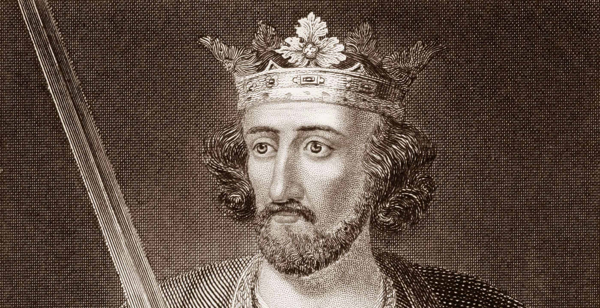

May
Named after Maia, the Greek goddess of fertility, growth, and the spring. In Roman mythology, Maia was associated with the earth and nurturing new life, making May a fitting name for a month when flowers bloom and nature thrives in many parts of the world.
May 1

Christopher Columbus presents his plans discovering a western route to the Indies to the Spanish Queen Isabella I of Castile.
1486 AD
Spain

The Penny Black, the first official adhesive postage stamp, is issued in the United Kingdom.
1840 AD
United Kingdom

The Empire State Building is dedicated in New York City.
1931 AD
New York, United States
May 2

King Richard I of England gives Portsmouth its first royal charter.
1194 AD
Portsmouth, England

The King James Version of the Bible is published for the first time in London, England, by printer Robert Barker.
1611 AD
London, England

Osama bin Laden, the suspected mastermind behind the September 11 attacks and the FBI's most wanted man, is killed by the United States Navy SEALs in Abbottabad, Pakistan.
2011 AD
Waziristan Haveli, Bilal Town, Abbottabad, Khyber Pakhtunkhwa, Pakistan
May 3

Mayan king Bird Jaguar IV of Yaxchilan in modern-day Chiapas, Mexico, assumes the throne.
752 AD
Yaxchilan in modern-day Chiapas, Mexico

The Canterbury and Whitstable Railway is opened; it is the first steam-hauled passenger railway to issue season tickets and include a tunnel.
1830 AD
Kent, England

The first unsolicited bulk commercial email (which would later become known as "spam") is sent by a Digital Equipment Corporation marketing representative to every ARPANET address on the west coast of the United States.
1978 AD
United States
May 4

The Augustinian monastic order is constituted at the Lecceto Monastery when Pope Alexander IV issues a papal bull Licet ecclesiae catholicae.
1256 AD
Lecceto, Tuscany, Italy

Dutch explorer Peter Minuit arrives in New Netherland (present day Manhattan Island) aboard the 'See Meeuw'.
1626 AD
New Netherland present day Manhattan Island, United States

The 108-story Sears Tower in Chicago is topped out at 1,451 feet (442 m) as the world's tallest building.
1973 AD
233 S. Wacker Drive, Chicago, Illinois 60606, United States
May 5

On his second voyage to the New World, Christopher Columbus sights Jamaica, landing at Discovery Bay and declares Jamaica the property of the Spanish crown.
1494 AD
Jamaica

Mary Kies becomes the first woman awarded a U.S. patent, for a technique of weaving straw with silk and thread.
1809 AD
United States

Project Mercury: Alan Shepard becomes the first American to travel into outer space, on a sub-orbital flight.
1961 AD
United States
May 6

King Henry VIII orders English-language Bibles be placed in every church. In 1539 the Great Bible would be provided for this purpose.
1541 AD
England

The Eiffel Tower is officially opened to the public at the Universal Exposition in Paris.
1889 AD
7th arrondissement, Paris, France

Steve Jobs of Apple Inc. unveils the first iMac.
1998 AD
United States
May 7

In Constantinople, the dome of the Hagia Sophia collapses, twenty years after its construction. Justinian I immediately orders that the dome be rebuilt.
558 AD
Fatih, Istanbul, Turkey

The world's oldest surviving clipper ship, the City of Adelaide is launched by William Pile, Hay and Co. in Sunderland, England, for transporting passengers and goods between Britain and Australia.
1864 AD
Sunderland, England

The concept of the integrated circuit, the basis for all modern computers, is first published by Geoffrey Dummer.
1952 AD
Washington, D.C., United States
May 8

Spring and Autumn period: The house of Zhao defeats the house of Zhi, ending the Battle of Jinyang, a military conflict between the elite families of the State of Jin.
453 BC
China

Emperor Honorius signs an edict providing tax relief for the Italian provinces Tuscia, Campania, Picenum, Samnium, Apulia, Lucania and Calabria, which were plundered by the Visigoths.
413 AD
Italy
.jpg )
Reccared I opens the Third Council of Toledo, marking the entry of Visigothic Spain into the Catholic Church.
589 AD
Spain

Treaty of Brétigny drafted between King Edward III of England and King John II of France (the Good).
1360 AD
France
.jpg )
Julian of Norwich, a Christian mystic and anchoress, experiences the deathbed visions described in her Revelations of Divine Love.
1373 AD
England

Joan of Arc lifts the Siege of Orléans, turning the tide of the Hundred Years' War.
1429 AD
France

Kentishmen revolt against King Henry VI.
1450 AD
England

A group of imperial guards, led by Trịnh Duy Sản, murdered Emperor Lê Tương Dực and fled, leaving the capital Thăng Long undefended.
1516 AD
Vietnam

Hernando de Soto stops near present-day Walls, Mississippi, and sees the Mississippi River (then known by the Spanish as Río de Espíritu Santo, the name given to it by Alonso Álvarez de Pineda in 1519).
1541 AD
United States
May 9

Athanasius is elected Patriarch of Alexandria.
328 AD
Egypt

Lombard Revolt: Lombard forces led by Melus revolt in Bari against the Byzantine Catepanate of Italy.
1009 AD
Italy

England and Portugal formally ratify their alliance with the signing of the Treaty of Windsor, making it the oldest diplomatic alliance in the world which is still in force.
1386 AD
England

Timurid monarch 'Abd al-Latif is assassinated.
1450 AD
Timurid Empire

Hernando de Alarcón sets sail on an expedition to the Gulf of California.
1540 AD
Mexico
May 10
A sunspot is observed by Han dynasty astronomers during the reign of Emperor Cheng of Han, one of the earliest dated sunspot observations in China.
28 BC
China
- 
Scottish nobles recognize the authority of Edward I of England pending the selection of a king.
1291 AD
Scotland

Temür, Khagan of the Mongols, is enthroned as Emperor of the Yuan dynasty.
1294 AD
Mongolia

Amerigo Vespucci allegedly leaves Cádiz for his first voyage to the New World.
1497 AD
Spain

Christopher Columbus visits the Cayman Islands and names them Las Tortugas after the numerous turtles there.
1503 AD
Cayman Islands

Jacques Cartier visits Newfoundland.
1534 AD
Canada
May 11

Constantine the Great dedicates the much-expanded and rebuilt city of Byzantium, changing its name to New Rome and declaring it the new capital of the Eastern Roman Empire.
330 AD
Turkey

A copy of the Diamond Sūtra is published, making it the earliest dated and printed book known.
868 AD
China

In the first coronation ceremony ever held for an English monarch, Edgar the Peaceful is crowned King of England, having ruled since 959 AD. His wife, Ælfthryth, is crowned queen, the first recorded coronation for a Queen of England.
973 AD
England

Matilda of Flanders, wife of William the Conqueror, is crowned Queen of England.
1068 AD
England

Louis IX of France and James I of Aragon sign the Treaty of Corbeil, renouncing claims of feudal overlordship in one another's territories and separating the House of Barcelona from the politics of France.
1258 AD
France
May 12

Pope Stephen I succeeds Pope Lucius I, becoming the 23rd pope of the Catholic Church, and immediately takes a stand against Novatianism.
254 AD
Rome

Zhu Wen forces Emperor Ai into abdicating, ending the Tang dynasty after nearly three hundred years of rule.
907 AD
China

Richard I of England marries Berengaria of Navarre in Cyprus; she is crowned Queen consort of England the same day.
1191 AD
England

Antipope Nicholas V, a claimant to the papacy, is consecrated in Rome by the Bishop of Venice.
1328 AD
Rome

Jagiellonian University, the oldest university in Poland, is founded in Kraków.
1364 AD
Poland

Pope Alexander VI excommunicates Girolamo Savonarola.
1497 AD
Rome

The Prince of Anhua rebellion begins when Zhu Zhifan kills all the officials invited to a banquet and declares his intent on ousting the powerful Ming dynasty eunuch Liu Jin during the reign of the Zhengde Emperor.
1510 AD
China

National University of San Marcos, the oldest university in the Americas, is founded in Lima, Peru.
1551 AD
Peru

French Wars of Religion: Henry III of France flees Paris after Henry I, Duke of Guise, enters the city and a spontaneous uprising occurs.
1588 AD
France

London playwright Thomas Kyd is arrested and tortured by the Privy Council for libel.
1593 AD
England
May 13

A Latin Christian fleet defeats a larger Turkish fleet in the battle of Pallene during the Smyrniote crusades.
1344 AD
Greece

Julian of Norwich has visions of Jesus while suffering from a life-threatening illness, visions which are later described and interpreted in her book Revelations of Divine Love.
1373 AD
England

Amerigo Vespucci, this time under Portuguese flag, set sail for western lands.
1501 AD
Portugal

Mary, Queen of Scots, is defeated at the Battle of Langside, part of the civil war between Queen Mary and the supporters of her son, James VI.
1568 AD
Scotland
May 14

Robert II of France names his son Henry I as junior King of the Franks.
1027 AD
France

The Siege of Nicaea begins during the First Crusade.
1097 AD
Turkey

Battle of Lewes: Henry III of England is captured and forced to sign the Mise of Lewes, making Simon de Montfort the effective ruler of England.
1264 AD
England

During the 1465 Moroccan revolution which overthrows the Marinid dynasty, the Jewish mellah is attacked by the population of Fez, though the extent of the massacre is debated.
1465 AD
Morocco

Battle of Agnadello: In northern Italy, French forces defeat the Republic of Venice.
1509 AD
Italy
May 15

Liu Bei, Chinese warlord, proclaims himself emperor of Shu Han, the successor of the Han dynasty.
221 AD
China

Emperor Valentinian II is assassinated while advancing into Gaul against the Frankish usurper Arbogast. He is found hanging in his residence at Vienne.
392 AD
France

King Authari marries Theodelinda, daughter of the Bavarian duke Garibald I. A Catholic, she has great influence among the Lombard nobility.
589 AD
Italy

Abd al-Rahman I, the founder of the Arab dynasty that ruled the greater part of Iberia for nearly three centuries, becomes emir of Cordova, Spain.
756 AD
Spain

Pope Innocent IV issues the papal bull ad extirpanda, which authorizes, but also limits, the torture of heretics in the Medieval Inquisition.
1252 AD
Rome

Insurgent peasants led by Anabaptist pastor Thomas Müntzer were defeated at the Battle of Frankenhausen, ending the German Peasants' War in the Holy Roman Empire.
1525 AD
Germany

Anne Boleyn, Queen of England, stands trial in London on charges of treason, adultery and incest; she is condemned to death by a specially-selected jury.
1536 AD
England
May 16

Emperor Suzaku abdicates the throne in favor of his brother Murakami who becomes the 62nd emperor of Japan.
946 AD
Japan

Baldwin IX, Count of Flanders is crowned as the first Emperor of the Latin Empire.
1204 AD
Latin Empire

Hundred Years' War: Bertrand du Guesclin and a French army defeat the Anglo-Navarrese army of Charles the Bad at Cocherel.
1364 AD
France

Gov. Thado of Mohnyin becomes King of Ava.
1426 AD
Myanmar

The Florentines drive out the Medici for a second time and Florence re-establishes itself as a republic.
1527 AD
Italy

Sir Thomas More resigns as Lord Chancellor of England.
1532 AD
England

Mary, Queen of Scots, flees to England.
1568 AD
England

Santiago de Vera becomes sixth governor-general of the Spanish colony of the Philippines.
1584 AD
Philippines
May 17

Battle of Rovine: The Wallachians defeat an invading Ottoman army.
1395 AD
Romania

Edward Stafford, 3rd Duke of Buckingham, is executed for treason.
1521 AD
England

Pánfilo de Narváez departs Spain to explore Florida with 600 men – by 1536 only four survive.
1527 AD
Spain

George Boleyn, 2nd Viscount Rochford and four other men are executed for treason.
1536 AD
England

Henry VIII and Anne Boleyn's marriage is annulled.
1536AD
England

Anne of Denmark is crowned Queen of Scotland.
1590 AD
Scotland
May 18

Emperor Constantine the Great announces free distributions of food to the citizens in Constantinople.
332 AD
Turkey

Louis II of Italy is crowned for the second time as Holy Roman Emperor at Rome, at the age of 47. His first coronation was 28 years earlier, in 844, during the reign of his father Lothair I.
872 AD
Italy

First Crusade: Around 800 Jews are massacred in Worms, Germany.
1096 AD
Germany

The future Henry II of England marries Eleanor of Aquitaine. He would become king two years later, after the death of his cousin once removed King Stephen of England.
1152 AD
England

The Principality of Antioch, a crusader state, falls to the Mamluk Sultan Baibars in the Siege of Antioch.
1268 AD
Turkey

Fall of Acre, the end of Crusader presence in the Holy Land.
1291 AD
Israel

Bruges Matins, the nocturnal massacre of the French garrison in Bruges by members of the local Flemish militia.
1302 AD
Belgiuim

During the Battle of Buyur Lake, General Lan Yu leads a Ming army forward to crush the Mongol hordes of Tögüs Temür, the Khan of Northern Yuan.
1388 AD
China

Alonso de Ojeda sets sail from Cádiz on his voyage to what is now Venezuela.
1499 AD
Spain

The Great Siege of Malta begins, in which Ottoman forces attempt and fail to conquer Malta.
1565 AD
Malta

Playwright Thomas Kyd's accusations of heresy lead to an arrest warrant for Christopher Marlowe.
1593 AD
England
May 19

Ashina Jiesheshuai and his tribesmen assaulted Emperor Taizong at Jiucheng Palace.
639 AD
China

Pope Gregory II is elected.
715 AD
Rome

The Byzantine Empire reconquers Melitene under the leadership of John Kourkouas.
934 AD
Turkey

Henry I of France marries the Rus' princess, Anne of Kiev.
1051 AD
France

John II of Castile defeats the Infantes of Aragon at the First Battle of Olmedo.
1445 AD
Spain

Catherine of Aragon is married by proxy to Arthur, Prince of Wales. Catherine is 13 and Arthur is 12.
1499 AD
England

French explorer Jacques Cartier sets sail on his second voyage to North America with three ships, 110 men, and Chief Donnacona's two sons (whom Cartier had kidnapped during his first voyage).
1535 AD
France

Anne Boleyn, the second wife of Henry VIII of England, is beheaded for adultery, treason, and incest.
1536 AD
England

The Prome Kingdom falls to the Taungoo Dynasty in present-day Myanmar.
1542 AD
Myanmar
May 20

The First Council of Nicaea is formally opened, starting the first ecumenical council of the Christian Church.
325 AD
Turkey

Empress Ariadne marries Anastasius I. The widowed Augusta is able to choose her successor for the Byzantine throne, after Zeno (late emperor) dies of dysentery.
491 AD
Byzantine Empire

The Battle of Dun Nechtain is fought between a Pictish army under King Bridei III and the invading Northumbrians under King Ecgfrith, who are decisively defeated.
685 AD
Scotland

While visiting the royal Mercian court at Sutton Walls with a view to marrying princess Ælfthryth, King Æthelberht II of East Anglia is taken captive and beheaded.
794 AD
England

The Second Battle of Lincoln is fought near Lincoln, England, resulting in the defeat of Prince Louis of France by William Marshal, 1st Earl of Pembroke.
1217 AD
England

King Sancho IV of Castile creates the Estudio de Escuelas de Generales in Alcalá de Henares.
1293 AD
Spain

King Mohnyin Thado formally ascends to the throne of Ava.
1426 AD
Myanmar

The Battle of Alfarrobeira is fought, establishing the House of Braganza as a principal royal family of Portugal.
1449 AD
Portugal

John Cabot sets sail from Bristol, England, on his ship Matthew looking for a route to the west (other documents give a May 2 date).
1497 AD
England

Portuguese explorer Vasco da Gama discovers the sea route to India when he arrives at Kozhikode (previously known as Calicut), India.
1498 AD
India

Hernan Cortés defeats Pánfilo de Narváez, sent by Spain to punish him for insubordination.
1520 AD
Mexico

Ignatius of Loyola is seriously wounded in the Battle of Pampeluna.
1521 AD
Spain

Cartographer Abraham Ortelius issues Theatrum Orbis Terrarum, the first modern atlas.
1570 AD
Belgium
May 21

Roman Emperors Diocletian and Maximian appoint Galerius as Caesar to Diocletian, beginning the period of four rulers known as the Tetrarchy.
293 AD
Rome

Syracuse, Sicily, is captured by the Muslim Aghlabids after a nine-month siege.
878 AD
Sicily

Pope John VIII gives blessings to Branimir of Croatia and to the Croatian people, considered to be international recognition of the Croatian state.
879 AD
Croatia

Sixteen-year-old Otto III is crowned Holy Roman Emperor.
996 AD
Rome

Dušan's Code, the constitution of the Serbian Empire, is enacted by Dušan the Mighty.
1349 AD
Serbia

Henry III of Castile sends Ruy González de Clavijo as ambassador to Timur to discuss the possibility of an alliance between Timur and Castile against the Ottoman Empire.
1403 AD
Timur

Queen Mary I grants a royal charter to Derby School, as a grammar school for boys in Derby, England.
1554 AD
England
May 22

Dong Zhuo is assassinated by his adopted son Lü Bu.
192 AD
China

Fourteenth recorded perihelion passage of Halley's Comet.
760 AD
Turkey

A Byzantine fleet sacks and destroys undefended Damietta in Egypt.
853 AD
Egypt

The Hashshashin (Assassins) attempt to assassinate Saladin near Aleppo.
1176 AD
Syria

King John of England and King Philip II of France sign the Treaty of Le Goulet.
1200 AD
France

Henry Raspe is elected anti-king of the Kingdom of Germany in opposition to Conrad IV.
1246 AD
Germany

Serbian King Stefan Uroš I and the Republic of Venice sign a peace treaty.
1254 AD
Serbia

Brussels massacre: An estimated 13 Jews are murdered and the rest of the Jewish community is banished from Brussels, Belgium, for allegedly desecrating consecrated Host.
1370 AD
Belgium

Pope Gregory XI issues five papal bulls to denounce the doctrines of English theologian John Wycliffe.
1377 AD
Rome

Start of the Wars of the Roses: At the First Battle of St Albans, Richard, Duke of York, defeats and captures King Henry VI of England.
1455 AD
England

The massacre at the festival of Tóxcatl takes place during the Fall of Tenochtitlan, resulting in turning the Aztecs against the Spanish.
1520 AD
Mexico
May 23

Joan of Arc is captured at the Siege of Compiègne by troops from the Burgundian faction.
1430 AD
France

Girolamo Savonarola is burned at the stake in Florence, Italy.
1498 AD
Italy

The marriage of King Henry VIII to Catherine of Aragon is declared null and void.
1533 AD
England

Dutch rebels led by Louis of Nassau, defeat Jean de Ligne, Duke of Arenberg, and his loyalist troops in the Battle of Heiligerlee, opening the Eighty Years' War.
1568 AD
Netherlands
May 24

Emperor Maurice proclaims his son Theodosius as co-emperor of the Byzantine Empire.
1595 AD
Netherlands

First Eid al-Fitr celebration.
1883 AD
United States

The death of the Fatimid caliph al-Hakim bi-Amr Allah, kept secret for six weeks, is announced, along with the succession of his son, al-Zahir li-i'zaz Din Allah.
1940 AD
United States
May 25

Emperor Maurice proclaims his son Theodosius as co-emperor of the Byzantine Empire.
240 BC
China

First Eid al-Fitr celebration.
1660 AD
United Kingdom

The death of the Fatimid caliph al-Hakim bi-Amr Allah, kept secret for six weeks, is announced, along with the succession of his son, al-Zahir li-i'zaz Din Allah.
2012 AD
United States
May 26

Emperor Maurice proclaims his son Theodosius as co-emperor of the Byzantine Empire.
1293 AD
Japan

First Eid al-Fitr celebration.
1896 AD
United States

The death of the Fatimid caliph al-Hakim bi-Amr Allah, kept secret for six weeks, is announced, along with the succession of his son, al-Zahir li-i'zaz Din Allah.
1986 AD
European Union
May 27

Emperor Maurice proclaims his son Theodosius as co-emperor of the Byzantine Empire.
1096 AD
Germany

First Eid al-Fitr celebration.
1896 AD
United States

The death of the Fatimid caliph al-Hakim bi-Amr Allah, kept secret for six weeks, is announced, along with the succession of his son, al-Zahir li-i'zaz Din Allah.
1937 AD
United States
May 28

Emperor Maurice proclaims his son Theodosius as co-emperor of the Byzantine Empire.
1588 AD
Portugal

First Eid al-Fitr celebration.
1830 AD
United States

The death of the Fatimid caliph al-Hakim bi-Amr Allah, kept secret for six weeks, is announced, along with the succession of his son, al-Zahir li-i'zaz Din Allah.
1932 AD
Netherlands
May 29

Emperor Maurice proclaims his son Theodosius as co-emperor of the Byzantine Empire.
1453 AD
Turkey

First Eid al-Fitr celebration.
1886 AD
United States

The death of the Fatimid caliph al-Hakim bi-Amr Allah, kept secret for six weeks, is announced, along with the succession of his son, al-Zahir li-i'zaz Din Allah.
1919 AD
São Tomé and Príncipe & Brazil
May 30

Emperor Maurice proclaims his son Theodosius as co-emperor of the Byzantine Empire.
70 AD
Israel

First Eid al-Fitr celebration.
1631 AD
France

The death of the Fatimid caliph al-Hakim bi-Amr Allah, kept secret for six weeks, is announced, along with the succession of his son, al-Zahir li-i'zaz Din Allah.
1975 AD
Europe
May 31

Emperor Maurice proclaims his son Theodosius as co-emperor of the Byzantine Empire.
455 AD
Italy

First Eid al-Fitr celebration.
1879 AD
United States

The death of the Fatimid caliph al-Hakim bi-Amr Allah, kept secret for six weeks, is announced, along with the succession of his son, al-Zahir li-i'zaz Din Allah.
1911 AD
Northern Ireland